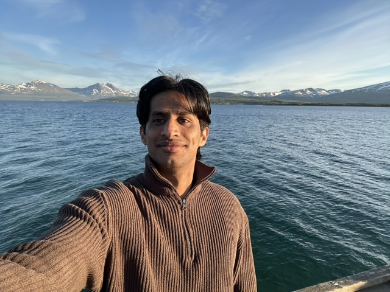

OpenAI DevDayTOP 4 FINALIST
Play should be for everyone.
Voice-first gaming for blind and low-vision players. Playora brings game state, spoken commands, and accessible interaction into the same experience.
Explore Playora
AI engineer & researcher · Paris, France
LOOKING FOR MY FIRST FULL-TIME AI / ML ROLE
I build agents, explore vision models, and turn research into things you can actually use. Sometimes, that means teaching a computer to play. Sometimes, helping a robot see.
Hi! I keep an eye on the experiments. Want to discover something?
RESEARCH AT ORANGE INNOVATION
A connection is more than a line on a graph. Follow what happens when a network starts to struggle.
Plays automatically. Choose a step to pause and explore.
The network and loads are illustrative. Detection was evaluated in the report; capacity-aware routing here is an exploratory extension.
BUILT, TESTED, EXPLORED
Real problems. Different disciplines.
A few things I’ve put into the world.
THE PATH SO FAR
From getting hardware to behave to asking what a model really sees. Every stop added a new way to think.
Built graph representations and self-supervised anomaly detection for telecom networks, with training and evaluation pipelines running on HPC/GPU clusters using Slurm and Docker.
Read the research reportFine-tuned Qwen and InternVL on remote-sensing imagery, then investigated modality bias, fusion, and language priors on a roughly 20K-example dataset.
Explore the researchTrained and compressed CNNs for plant disease recognition, deployed real-time inference on Raspberry Pi, and integrated vision with a cable-driven parallel robot and joystick navigation.
Explore the robotics projectDeveloped and improved HMI control panels for power-plant operations, monitoring, and diagnostics. Worked with sensor feedback and warning indicators to make plant conditions visible to operators.
CURIOSITY, IN PRACTICE
Hackathons, experiments, and the joy
of figuring something out.
Voice-first gaming for blind and low-vision players. Playora brings game state, spoken commands, and accessible interaction into the same experience.
Explore PlayoraAgentic marketing tools connecting business workflows and apps through a single interface.
Experiments in watermarking AI-generated content and unlearning user data from language models.
Exploring AR/VR and voice guidance to help technicians work through complex hardware tasks.
A SMALL INTERACTIVE DETOUR
A point cloud, three shapes, and a little room to play. Move your pointer over the sketch, change its form, or pause the motion.
THINKING OUT LOUD
I also write on Medium—about building with AI and the ideas behind the models.
AI should support engineering judgment, not replace it. A reflection on understanding your codebase, forming your own hypotheses, planning carefully, and reviewing what coding agents change.
A walkthrough of the Universal Transformer: reusing the same layers across recurrent steps, adding position-and-time information, and letting each token choose its computation depth with Adaptive Computation Time.
An interesting problem, a research idea,
or just a hello. My inbox is open.